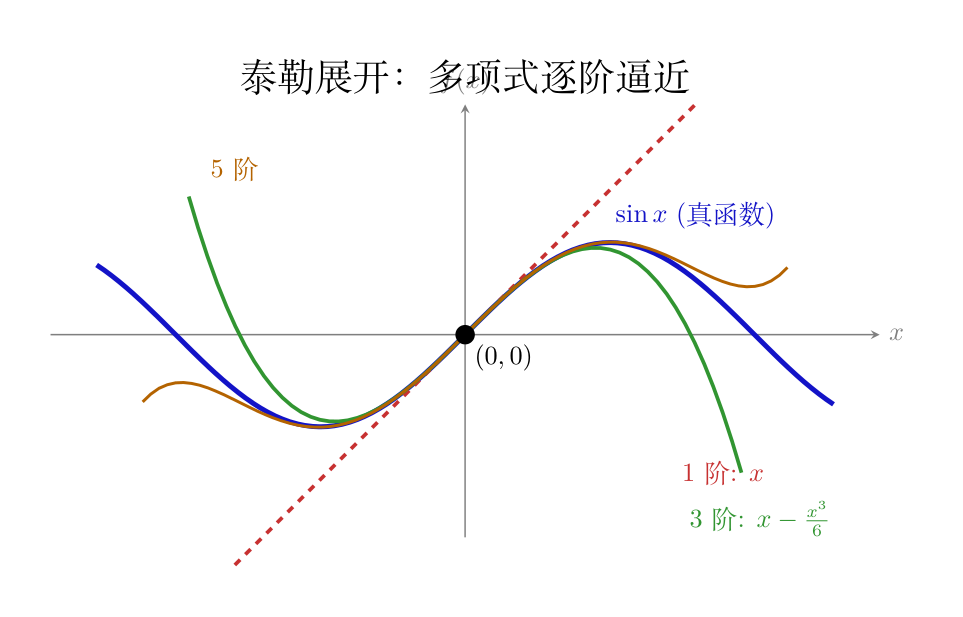

目标：一条复杂的曲线 $f(x)$ 不好算，我们想找一条简单的多项式来代替它——至少在某个点 $x=a$ 附近，和它长得一模一样。
这个多项式长什么样，公式直接给出来了。$f$ 在 $x=a$ 处的泰勒展开是：
$$f(x) = f(a) + f'(a)\,\frac{(x-a)}{1!} + f''(a)\,\frac{(x-a)^2}{2!}$$ $$+ f'''(a)\,\frac{(x-a)^3}{3!} + \cdots$$ $$+ f^{(n)}(a)\,\frac{(x-a)^n}{n!} + \cdots$$记号约定：$f^{(n)}(a)$ 表示"$f$ 求 $n$ 次导之后代入 $a$"（$f^{(0)}(a) = f(a)$、$f^{(1)}(a) = f'(a)$、$f^{(2)}(a) = f''(a)$）；$n!$ 是阶乘，$1! = 1$、$2! = 2$、$3! = 6$、$4! = 24$、$5! = 120$，规则是 $n! = n\cdot(n-1)\cdots 1$。
公式很长，但结构极简单：右边每一项，只负责"对上" $f$ 的一阶导数——第 1 项对上函数值，第 2 项对上斜率（切线），第 3 项对上二阶导数……把每一阶都对上，两条曲线在 $a$ 点附近就重合了。下面逐项拆开看。
（如果 $f$ 无限可导，这个无穷级数在收敛半径内精确等于 $f(x)$；实际使用时通常只取前几项。）
把右边第 $n$ 项单独拎出来，记作 $T_n$：
$$T_n = f^{(n)}(a)\cdot\frac{(x-a)^n}{n!}$$它的本事在"求 $n$ 次导"这一步上。先看 $(x-a)^n$ 被求 $n$ 次导会发生什么——每求一次导，就把当前的次数掉下来乘到前面：
$$(x-a)^n \xrightarrow{\ n\text{ 次导数}\ } n\cdot(n-1)\cdots 2\cdot 1 = n!$$再除以下面那个 $n!$：$\frac{n!}{n!} = 1$。所以分母的 $n!$ 正好把掉下来的因子消干净：
$$\frac{(x-a)^n}{n!} \xrightarrow{\ n\text{ 次导数}\ } 1$$ $$\Longrightarrow\qquad T_n \xrightarrow{\ n\text{ 次导数}\ } f^{(n)}(a)$$一句话：第 $n$ 项求 $n$ 次导，得到的正好是 $f^{(n)}(a)$。这就是它存在的唯一理由。
其他项会不会来捣乱？不会。次数低于 $n$ 的项（比如 $f(a)$、$f'(a)(x-a)$）求 $n$ 次导后全是 $0$；次数高于 $n$ 的项求 $n$ 次导后仍然带着 $(x-a)$，代入 $x = a$ 还是 $0$。所以在 $x=a$ 处，第 $n$ 阶导数只由 $T_n$ 一个项贡献——各管一阶，互不干扰。
把 $n = 0, 1, 2$ 各看一遍，这个"对号入座"就清楚了。
它是常数，管的是高度：$x = a$ 时所有 $n \ge 1$ 的项都带着 $(x-a)$、全部归零，只剩 $f(a)$，所以两边在 $a$ 处高度相同 ✓
注意 $f(a)$ 和 $f'(a)$ 都是数（常数），式子里只有 $x$ 在变。求导：常数 $f(a)$ 得 $0$；$(x-a)$ 得 $1$；$f'(a)$ 是固定的倍数，不参与求导。所以前两项加起来
$$L(x) = f(a) + f'(a)(x-a)$$ $$\Longrightarrow\qquad L'(x) = f'(a)$$斜率处处是 $f'(a)$，而原曲线在 $x=a$ 处的斜率也正是 $f'(a)$（00-11 里导数的定义）；再加上 $L(a) = f(a)$（经过同一点）。"相切"的定义就是这两条——经过同一点 ✓、斜率相同 ✓，所以 $L$ 就是 $f$ 在 $a$ 处的切线。
为什么括号里要减 $a$？为了让这一项在 $x=a$ 处自动消失：$x = a$ 时 $(x-a) = 0$，它归零，只剩 $f(a)$，高度才对得上。若写成 $f(a) + f'(a)x$，斜率照样是 $f'(a)$，但在 $x=a$ 处高度变成 $f(a) + f'(a)a$——整条线平移了，成了平行线（$f = x^2$、$a = 2$ 时高出 $8 = f'(a)\cdot a$），那就不是切线。
照它自己的规矩：求两次导。$(x-a)^2$ 第一次得 $2(x-a)$，第二次得 $2$；再除以 $2! = 2$，结果是 $1$。所以 $T_2$ 求两次导贡献 $f''(a)$。而 $T_0$（常数）、$T_1$（一次项）求两次导都是 $0$；$T_3$ 及更高项求两次导还带着 $(x-a)$，在 $x=a$ 处为 $0$。于是在 $a$ 处二阶导数只由 $T_2$ 贡献 ✓——这一项就是用来把"弯曲"对上的。
把上面的规律一般化：$T_n$ 在 $x=a$ 处只贡献第 $n$ 阶导数，数值恰好是 $f^{(n)}(a)$；其余各阶都由零贡献。于是"$f$ 的第 $n$ 阶导数在 $a$ 处等于 $f^{(n)}(a)$"这件事对每个 $n$ 都成立——这正是右边那些项拼起来就能替代 $f$ 的原因。取的项越多，对上的阶数越高，在 $a$ 点附近贴得越紧。
看 $(x-a)^3$ 被求三阶导的全过程——每次求导都把当前的次数掉下来乘到前面：
$$\begin{aligned} (x-a)^3 &\xrightarrow{\ \text{1 次}\ } 3(x-a)^2 \\[4pt] &\xrightarrow{\ \text{2 次}\ } 3\cdot 2\,(x-a) \\[4pt] &\xrightarrow{\ \text{3 次}\ } 3\cdot 2\cdot 1 = 6 = 3! \end{aligned}$$掉下来的因子是 $n\cdot(n-1)\cdots 1 = n!$。也就是说，$(x-a)^n$ 求 $n$ 次导，前面会多出 $n!$ 倍。而我们要求这一项"不多不少，正好贡献 $f^{(n)}(a)$"——所以把 $n!$ 写在 $(x-a)^n$ 下面除一下，正好抵消：
$$\frac{(x-a)^n}{n!} \xrightarrow{\ n\text{ 次导数}\ } \frac{n!}{n!} = 1$$分母的 $n!$ 不是凭空规定，它是"求导时掉下来的那堆因子的总和"，摆在这里正好消掉。看具体数：$1! = 1$（一次项看不出分母）、$2! = 2$（二次项那个 2 就是这么来的）、$3! = 6$、$5! = 120$。
公式和 $n!$ 都拆完了，用一个能手算的函数把"每一项各管一阶导数"验一遍：$f(x) = 2x^3 - 5x^2 + 7x + 1$，在 $a = 0$ 处展开。它只用得到 00-11 的幂函数求导规则（$x^n \to n x^{n-1}$）。
第一步——各阶导数在 $0$ 处的值。求一次导就降一阶，常数项直接归零：
$$\begin{aligned} f'(x) &= 6x^2 - 10x + 7 \\[4pt] f''(x) &= 12x - 10, \qquad f'''(x) = 12 \end{aligned}$$代入 $x = 0$：$f(0) = 1$、$f'(0) = 7$、$f''(0) = -10$、$f'''(0) = 12$。
第二步——按公式摆出每一项。（$a = 0$ 时 $(x-a)^n$ 就是 $x^n$。）
| $n$ | $f^{(n)}(0)$ | $n!$ | 这一项 | 它负责对上 |
|---|---|---|---|---|
| 0 | 1 | $1!=1$ | $1$ | 函数值 $f(0) = 1$ |
| 1 | 7 | $1!=1$ | $7x$ | 斜率 $f'(0) = 7$ |
| 2 | $-10$ | $2!=2$ | $-5x^2$ | 二阶导 $f''(0) = -10$ |
| 3 | 12 | $3!=6$ | $2x^3$ | 三阶导 $f'''(0) = 12$ |
四项加起来：$1 + 7x - 5x^2 + 2x^3$——正好还原原来的函数。这不是巧合：$-10 \div 2 = -5$、$12 \div 6 = 2$，原函数的系数本来就只有这几个数。除以 $n!$ 就是把求导时被放大出去的倍数除回来。
再看一个非多项式的例子——$\sin x$，展开点还是取最简单的 $a = 0$。（展开点 $a$ 是我们自己挑的，挑 $0$ 只是因为 $\sin$ 在 $0$ 处的各阶导数最好算。$a = 0$ 时公式里的 $(x-a)^n$ 退化成 $x^n$，$f^{(n)}(0)$ 就是"各阶导数在 $0$ 处的值"。）
$\sin$ 的求导是四次一循环：$\sin \to \cos \to -\sin \to -\cos \to \sin \cdots$（课里还没讲过，此处不证；用 00-11 的数值微分取很小的间距近似，算出来就是 $\cos$）。代入 $x = 0$，各阶导数依次是 $f(0) = 0$、$f'(0) = 1$、$f''(0) = 0$、$f'''(0) = -1$、$f^{(4)}(0) = 0$、$f^{(5)}(0) = 1$、$\cdots$——每四阶循环一次，所以它能在 $a=0$ 处一路算下去。
偶数阶全是 $0$（$\sin$ 是奇函数），所以展开式里只剩奇次项：
$$\begin{aligned} \sin x &= x - \frac{x^3}{3!} + \frac{x^5}{5!} - \frac{x^7}{7!} + \cdots \\[4pt] &= x - \frac{x^3}{6} + \frac{x^5}{120} - \frac{x^7}{5040} + \cdots \end{aligned}$$取 $x = 1$ 看它准不准（真值 $\sin 1 = 0.841471$）：
| 多留一项 | 算出来的值 | 误差 |
|---|---|---|
| 只留 $x$ | 1.000000 | $1.6\times 10^{-1}$ |
| 再留 $x^3/6$ | 0.833333 | $8.1\times 10^{-3}$ |
| 再留 $x^5/120$ | 0.841667 | $2.0\times 10^{-4}$ |
| 再留 $x^7/5040$ | 0.841468 | $2.7\times 10^{-6}$ |
每多留一项，误差掉大约两个数量级——这就是"对上的阶数越高、在 $a$ 点附近贴得越紧"的实际含义。

import numpy as np
# ===== 数值微分：用代码算坡度 =====
def num_grad(f, x, eps=1e-5):
"""中央差分：往前走一丁点，往后退一丁点，算平均坡度
(f(x+eps)-f(x-eps)) / (2*eps)
精度比单边高：单边只看"往前"，中央看了"前后"然后取平均，误差抵消了一部分
"""
return (f(x + eps) - f(x - eps)) / (2 * eps)
# 测试 f(x)=x²，理论导数 = 2x
def sq(x):
return x ** 2
for x in [1, 2, 3]:
# 数值近似
n = num_grad(sq, x)
# 理论：f'(x)=2x
t = 2 * x
print(f"数值={n:.6f} 理论={t:.0f}")
# ===== 梯度下降：从山顶走到山谷 =====
# f(x)=x²-4x+4 的最小值在 x=2（f'(x)=2x-4=0 → x=2）
# 站在 x=0 的位置
x = 0.0
# 学习率：每步走 0.1 倍的坡度
lr = 0.1
print(f"\n从 x=0 出发，目标 x=2")
for step in range(30):
# 当前位置的坡度
grad = 2*x - 4
# 沿着坡度反方向走一步
x = x - lr * grad
if step % 5 == 0:
print(f" 第{step:2d}步: x={x:.4f} 坡度={grad:+.4f}")
# 坡度从 -4 逐渐变成 0，x 从 0 逐渐滑到 2代码注释说「误差抵消了一部分」——到底怎么抵消的？用泰勒展开来算。
单边差分（只看往前）：
$$f(x+\epsilon) = f(x) + \epsilon f'(x) + f''(x)\frac{\epsilon^2}{2!}$$ $$+ f'''(x)\frac{\epsilon^3}{3!} + O(\epsilon^4)$$移项：
$$\frac{f(x+\epsilon)-f(x)}{\epsilon} = f'(x) + \underbrace{f''(x)\frac{\epsilon}{2!} + O(\epsilon^2)}_{\text{误差项：首项是 } O(\epsilon)}$$误差的主导项是 $f''(x)\frac{\epsilon}{2!}$——和 $\epsilon$ 成正比。$\epsilon$ 缩小 10 倍，误差大约缩小 10 倍。
中央差分（看前后）：写出 $f(x+\epsilon)$ 和 $f(x-\epsilon)$ 两个泰勒展开：
$$ \begin{aligned} f(x+\epsilon) &= f(x) + \epsilon f'(x) + f''(x)\frac{\epsilon^2}{2!} \\[4pt] &\quad + f'''(x)\frac{\epsilon^3}{3!} + f''''(x)\frac{\epsilon^4}{4!} + \cdots \\[4pt] f(x-\epsilon) &= f(x) - \epsilon f'(x) + f''(x)\frac{\epsilon^2}{2!} \\[4pt] &\quad - f'''(x)\frac{\epsilon^3}{3!} + f''''(x)\frac{\epsilon^4}{4!} - \cdots \end{aligned} $$相减：$f(x+\epsilon) - f(x-\epsilon)$：
关键：相减时 $\epsilon^2$ 项同号抵消了！剩余误差主导项是 $f'''(x)\frac{\epsilon^2}{3!}$——和 $\epsilon^2$ 成正比。$\epsilon$ 缩小 10 倍，误差缩小 100 倍。这就是为什么中央差分比单边差分高一个精度量级。
直观理解：单边差分就像只看了看你前方一毫米的地形，就猜整条路的坡度——局部信息有限。中央差分同时看了前方和后方，左右信息对称，把「地形弯曲」带来的偏差对消掉了。